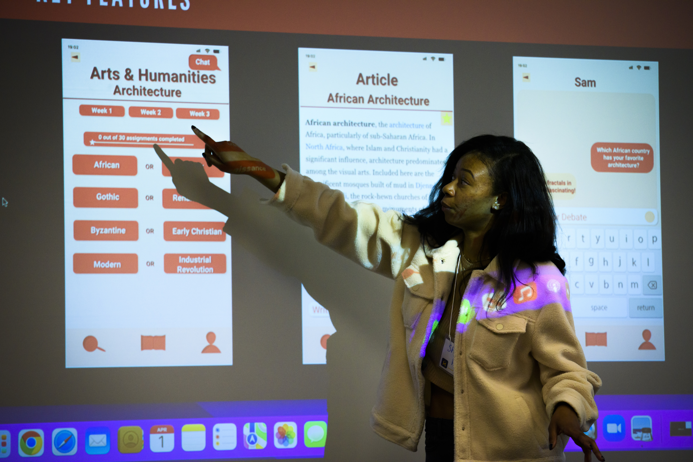
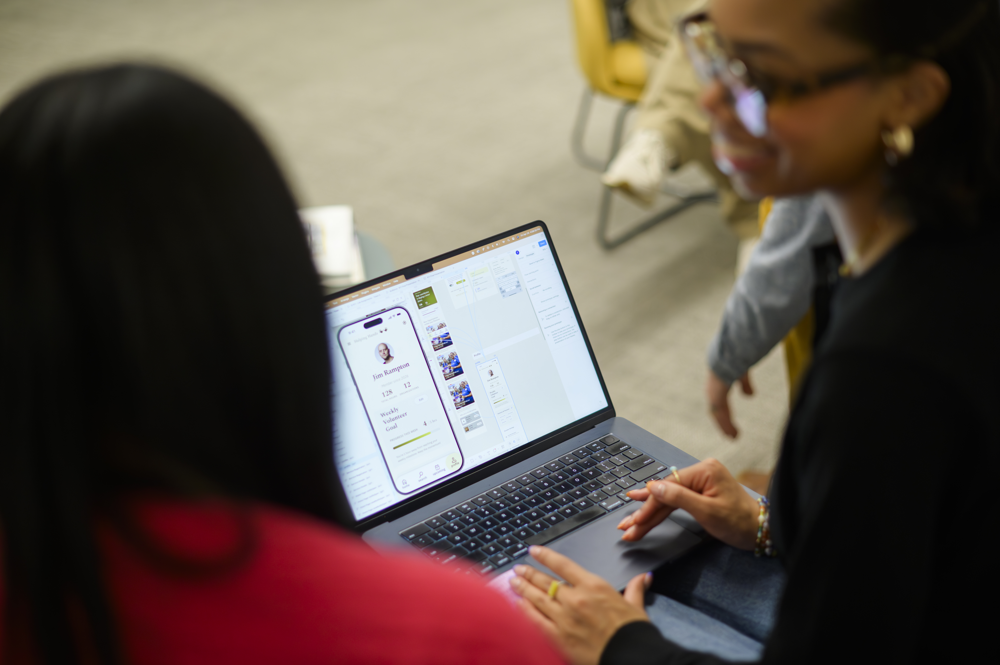

Exiting a Community-Engaged Project Worksheet
Use this guided template to prepare for responsible project transition, asset delivery, and offboarding.
View the Exiting a Community-Engaged Project Worksheet
Close your project responsibly, evaluate your outcomes, and articulate your real-world experience for your future career.
A project is not complete simply because the final deliverable has been handed over. The final stages of closing, reflecting, and translating are what transform a temporary project into lasting organizational value and personal career momentum.
Responsible handoffs help ensure that partners are not left with abandoned tools or undocumented systems they cannot maintain. Structured reflection also gives you an opportunity to consider what you learned about your technical skills, teamwork style, and the ethical impact of your work.

Responsible offboarding is an ethical responsibility in engaged learning. Delivering high-quality technical assets is only part of the work. Your community partner or client should also be able to maintain, update, and benefit from your work after the project ends.
Closing a project thoughtfully can help preserve the value of your work, support your partner after the transition, and bring the professional relationship to an appropriate conclusion.
Use these resources to review your original project commitments, organize final materials, and prepare your work for a responsible transition to your partner.
Use this guided template to prepare for responsible project transition, asset delivery, and offboarding.
View the Exiting a Community-Engaged Project WorksheetRevisit your original project scope and compare your final deliverables with the commitments established at the beginning of the project.
View the Project Scoping Handout & Terms
Project closure also involves ending the working relationship with your community or client partner respectfully. Communicate clearly, express gratitude for the partnership, and make sure that expectations for future communication are understood.
Review the toolkit's guidance for respectfully closing a partnership with a community organization.
View the Ginsberg Center Student-Client Partnership ToolkitAfter completing the handoff, take time to evaluate the project against its original goals and consider the impact of your work. Reflect on what you learned about your technical skills, your approach to teamwork, and the ethical dimensions of working with real clients and communities.
Reflection can also help you translate a complex project experience into clear examples that communicate your skills and contributions in future resumes, portfolios, and professional conversations.
By transitioning your work responsibly, closing the partnership respectfully, and reflecting on your outcomes, you can leave your partner with useful resources while carrying the lessons from the experience into your future work.
Return to the Student Resource Portal